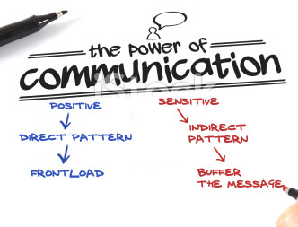

The Direct & Indirect Patterns of Organization
caption
istock
Workplace documents use the direct or indirect pattern of organization (or communication). When a direct message is sent, this does not mean that the tone is rude or abrupt. It means that the body of the message is structured differently depending in the purpose of the message and anticipated reaction of the audience.
Positive or Neutral
If the message is neutral or positive and the writer anticipates a neutral or positive response, the message is structured as a direct message (Figure 3.5 in Guffey & Almonte, p. 56). When a message is structured directly, it means that the main idea is introduced or frontloaded in the first paragraphs. That idea is then expanded in the body in as many concise paragraphs as necessary.
Negative or Sensitive
If the message is sensitive or negative and the writer anticipates a resistant or hostile response, the indirect pattern should be used. In this case, the first paragraph is neutral and does not frontload the refusal, but buffers it. The main point is withheld till later in the message (also see Figure 3.5) until the writer has laid the groundwork for the less pleasing news.
- 
-
Figure 3.5: Figure title
Credit line.